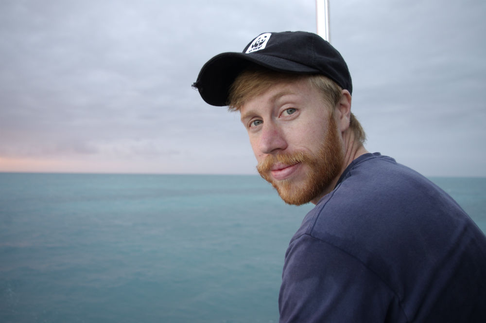

Team
BOARD
Manuel Dureil
President, Co-founder, Director of Research and Conservation Projects
Manuel grew up in a small town in western Germany. He obtained his BSc in Biology at the University of Marburg and his MSc in Biological Oceanography at the University of Kiel. He completed his PhD in the WormLab at Dalhousie University.
Since 2009, Manuel has been researching sharks, focusing on various aspects of conservation ecology and fisheries science. His research ranges from theoretical modelling of population trajectories and spatial distributions of sharks, skates and rays to tagging experiments in the field.
“Sharks, rays and skates need sustainable conservation strategies that are based on the best available science”
Mason Goulden
Co-Founder, Director of Strategic Planning, Treasurer
Mason grew up in the Pacific Northwest Rainforest of British Columbia. He obtained a J.D with a certificate in environmental law from Dalhousie University. Additionally, he holds a B.A in Political Science with double minors in Anthropology and Geography from the University of the Fraser Valley.
Mason comes from a background working for environmental law charities and research institutions. He has given presentations on environmental law reform to all levels of government, and universities throughout Atlantic Canada. His research has included international and domestic law and policies relating to: environmental rights; ocean acidification; integrated coastal zone management; marine biodiversity protection; transboundary resource management; and environmental assessments.
“Human rights and healthy ocean ecosystems are fundamentally intertwined. If we wish to live in a free and prosperous society, we must implement laws that protect the integrity of the ecosystems on which we depend.”
Kirsti Burnett
Research Associate and Media Outreach Coordinator
Kirsti grew up near the ocean on the Eastern Shore of Nova Scotia. With passions consistently driving her toward all things ocean-related, particularly shark-related, she followed her dream in pursing a degree in Marine Biology at Dalhousie University, and then went on to achieve a Divemaster certification in St. Maarten where she worked on and in the water teaching others about shark conservation.
Self-funding her way to South Africa and being accepted as an assistant researcher during an expedition to West Africa has given Kirsti shark-tagging and data-collection experience in the field, along with the practicality needed when working in foreign countries. Kirsti’s obtained skills paired with her enthusiasm and well-rounded experience in both field work and public outreach makes her the perfect member to direct social outreach and media initiatives, as well as assisting with research opportunities. She has also been a co-instructor of the Dalhousie University Elasmobranch Conservation Class since 2020.
"Understanding is the key to change. But before understanding comes curiosity of a question left unanswered, and the ocean, particularly sharks, hold many of these unanswered questions. We must answer these questions and fight for a greater understanding of these often-misunderstood animals if we are to bring about any kind of change.”
Scarlett Taylor
Research Associate, Canadian Coordinator
Scarlett Taylor is a marine biologist with a Master of Science in Biology from Dalhousie University, specializing in marine species population dynamics and conservation. Her research has focused on projects such as estimating the abundance of basking sharks in Atlantic Canada and understanding devil ray population declines in Malaysia, and she possesses strong skills in data analysis, statistical modeling, and GIS.
Currently, Scarlett works as a researcher for Global Reef in Thailand, where she contributes to marine conservation efforts and conducts vital research on reef ecosystems using innovative methods. Previously, she served as a Research Assistant with Marine Action Research (MAR) in Mozambique, where she participated in species surveys and conservation initiatives.
Her teaching experience includes roles as a Class Demonstrator and Teaching Assistant at Dalhousie University, where she supported students and shared her passion for marine biology. Scarlett is also committed to science communication and shares her knowledge and experiences through her social media platform (@SharksWithScar on X).
"I believe the best science, especially in shark science, is based in intersectionality, and takes into account underrepresented viewpoints."
Kaleigh Henry
Director of Finance
Kaleigh has been fortunate to live on both of Canada’s beautiful coasts. She grew up in a seaside town in British Columbia before living in Nova Scotia for three years. Kaleigh obtained her J.D from Dalhousie University, and holds a Bachelor of Business Administration with double minors in Gender Studies and Philosophy from Trinity Western University. Kaleigh graduated Trinity with the highest GPA of the Business School in her graduating class.
Kaleigh brings years of strategic management experience working with charities, not-for-profit organizations, and small businesses. She’s committed to fostering innovative solutions in the pursuit of healthy oceans ecosystems and sustainable coastal communities. We are excited and honoured to have Kaleigh’s legal and business experience on the board of Sharks of the Atlantic Research and Conservation Center.
“Sharks play an integral role in maintaining healthy ocean ecosystems. Let’s endeavour to understand them better and strive to protect shark populations.”
Scientific Advisors and Associates
Boris Worm
Boris Worm is a marine ecologist and Killam Research Professor at Dalhousie University, Halifax, Canada. His research program focuses on changes in marine biodiversity, and the effects of fisheries, climate change, and other human impacts on global ocean ecosystems. He is particularly well known for his studies on the global effects fishing and climate change on ocean ecosystems. He has a special interest in the rebuilding of fisheries resources, and in policy solutions that can help to prevent further loss of marine biodiversity worldwide.
Boris received both a M.Sc. (1996) and Ph.D. (2000) from the University of Kiel, Germany and worked as a postdoctoral fellow with the late Ransom A. Myers at Dalhousie. He joined the faculty at the Biology Department, Dalhousie University in 2004, became Full Professor in 2012, and Killam Research Professor in 2017. Dr. Worm and his students have published over 100 peer-reviewed scientific articles, several of which have become citation classics. Dr. Worm was identified as a Highly Cited Researcher by Thompson-Reuters in 2014.
He is a frequenter presenter on CBC radio and television, and has contributed to a number of award-winning feature documentaries, such as End of the Line, Sharkwater, and Racing Extinction.
Frederick G. Whoriskey, Jr.
Dr. Whoriskey is the Executive Director of the Ocean Tracking Network (OTN), a global research infrastructure documenting the movements and survival of aquatic animals, and their links to environmental conditions. The OTN is headquartered at Dalhousie University, Nova Scotia.
Prior to joining Dalhousie University in 2010, Fred was the Vice President, Research and Environment of the Atlantic Salmon Federation (ASF). While at ASF, he developed the organization’s science programs, and led science-based public policy activity. Other positions included working as an Assistant then Associate Professor at McGill University from 1986 – 1995, and as a Research Assistant for Woods Hole Oceanographic Institution (1976-1981). He has held appointments as an adjunct professor with the University of Guelph and University of New Brunswick, and McGill University as both an adjunct Professor and Associate Professor (part-time) at Dalhousie University. He has also served on the Boards of the AquaNet National Center of Excellence in Aquaculture, the Canadian Rivers Institute (Chair from June 2016 to present), and the Huntsman Marine Science Centre (Chair from 2003-2011). In addition to his science administration work, Fred has published extensively in the area of fish biology and ecology. He has been heavily involved in public policy issues, and has worked broadly in public education and environmental impact evaluation. He received a Gulf of Maine Visionary Award in 2008, the Atlantic Salmon Federation’s Lee Wulff Award in 2010, and is a frequent public speaker.
Dr Whoriskey received his BSc degree (honors) from Brown University in Providence, Rhode Island (1976), and his Ph.D. degree from l’Université Laval in Quebec City (1984). He held a NATO postdoctoral fellowship at the University College of Wales (now Aberystwyth University) in the UK (1985).
Chris Harvey-Clark
Dr. Chris Harvey-Clark is a veterinarian and marine biologist. He earned a B SC in Marine Biology with Distinction at the University of Victoria in 1981 and his Doctor of Veterinary Medicine from the Western College of Veterinary Medicine in Saskatoon in 1985, and was Research Fellow in Pathology at the University of Alberta in 1987 where he specialized in laboratory medicine and pathology. He has practiced in 6 Canadian provinces and was one of the first veterinarians in Canada to follow a career path involving aquatic animals in research settings.
He has initiated two major marine species research collaborations, co-founding the Canadian Sea Turtle Network in 1996 to study the leatherback sea turtle on its northern range, and cofounding the citizen science NGO Greenland Shark and Elasmobranch Education and Research Group (GEERG) in 1998. He has published over 40 papers, book chapters and proceedings on veterinary aspects of aquatic and wildlife species and was the principal author of the Canadian Council on Animal Care Guide to the Use of Fish in Research, now published in 3 languages and used in many other countries worldwide.
An avid diver since 1976 and underwater film maker since 1991, he has an extensive media resume and has been involved in the production of more than 50 television documentaries, most recently documenting the leatherback turtle for CBC The Nature of Things with David Suzuki “Trek of the Titans” in 2015.
He is the University Veterinarian at Dalhousie University in Halifax, Nova Scotia where he co- teaches a summer field course, Biology and Conservation of Sharks, Skates and Rays, with Manuel Dureuil. He is the author of Eastern Tidepool and Reef, the first Canadian color illustrated marine life guide of the North Atlantic, published in 1996, currently being updated to an online publishing platform. He has most recently released Maritime Marine Life , a field guide to the fishes, invertebrates and plants of the Northwest Atlantic. Since 2015, Dr. Harvey-Clarks most recent research projects focus on the largest electric ray found in the North Atlantic, the Atlantic Torpedo ray.
Captain Art Gaetan
Art is owner of Blue Shark Fishing Charters, a company that has been in business for over 20 years catching and tagging sharks. Since then they have tagged approximately 8 thousand sharks. Art has been to South Africa for two months doing an internship on the white shark and has been to Cabo Verde (West Africa) twice working on sharks. Blue Shark Fishing Charters had pretty much "the whose who" in the Canadian fishing world onboard and have been featured dozens of times on tv, radio and internet. They are now working with white sharks herein our own waters to tag and track them and help the Ocean Tracking Network (OTN) with tagging and acoustic array sensors replacement. In addition, Art has been an integral part of the undergraduate summer class “Conservation and Biology of sharks, skates and rays” at Dalhousie University from the beginning. Art has hired 5 marine biology students of which 3 now have a secured jobs in the Marine world.
Rui Freitas
ARui Freitas graduated in Marine Biology and Fisheries at the University of Algarve (Portugal) in 2005 and obtained an M.Sc in Marine Resources and Coastal Management from the University of Cabo Verde in 2008. He is currently a Ph.D. student in the DO*MAR program of the Campus do Mar (initiated at 2012), University of Vigo in Spain and a full-time Professor at the University of Cabo Verde (www.unicv.edu.cv), Faculty of Engineering and Sea Science and the Chair of the Zoological Society of Cabo Verde (SCVZ, www.scvz.org). The latter publishes the open access journal Zoologia Caboverdiana, which is the first and only peer-reviewed publication of Cabo Verde.
R. Freitas’ Ph.D. research project focuses on gathering the baseline community structure, ecology, biodiversity and biogeography of the reef fish from Cabo Verde Islands. The thesis is titled “Littoral Ichthyofauna of Cabo Verde islands: Biogeographic analysis and Community structure”. In collaboration with the Cabo Verde Ocean Observatory, CVOO in Mindelo and National Fisheries Institute, INDP, he also undertakes initiatives research on fisheries and telemetric oceanography. His knowledge covers a wide spectrum of disciplines in marine sciences including marine biodiversity, ichthyology, coastal ecology and management, MPA studies – using GIS approaches as research focus. He has an aim of establishing natural history and palaeontology museum of Cabo Verde archipelago.

Jarrett Corke
"I’ve always felt a deep connection to the ocean and the coast. Although I have a passion for all wildlife, it was my fascination with sharks that first inspired me to delve into marine conservation, photography and filmmaking. I continue to pursue my passion behind the camera documenting wildlife and conservation issues, working hands on with the Marine Animal Response Society in Nova Scotia and working remotely with The Society for Marine Mammology."
"I’ve always been more comfortable behind the lens of a camera catching that special moment. Being outside, working with my hands and exploring new places is what inspires me."
Joseph Pratt
Joseph was born in Ontario, but a passion for marine biology led him to pursue a M.Sc. from the University of New Brunswick, with a focus on Bay of Fundy Sharks. Joseph is currently a field technician for the Ocean Tracking Network, where he helps maintain arrays of acoustic telemetry equipment to aid researchers in valuable data collection, as well as provide logistical support for various project globally.
Joseph has maintained his love for sharks and has helped with the Cabo Verde field team in both shark tagging and equipment deployments. He is a regular volunteer with the Halifax Blue Shark tagging project, and a recurring speaker at Dalhousie University’s annual Elasmobranch field course.